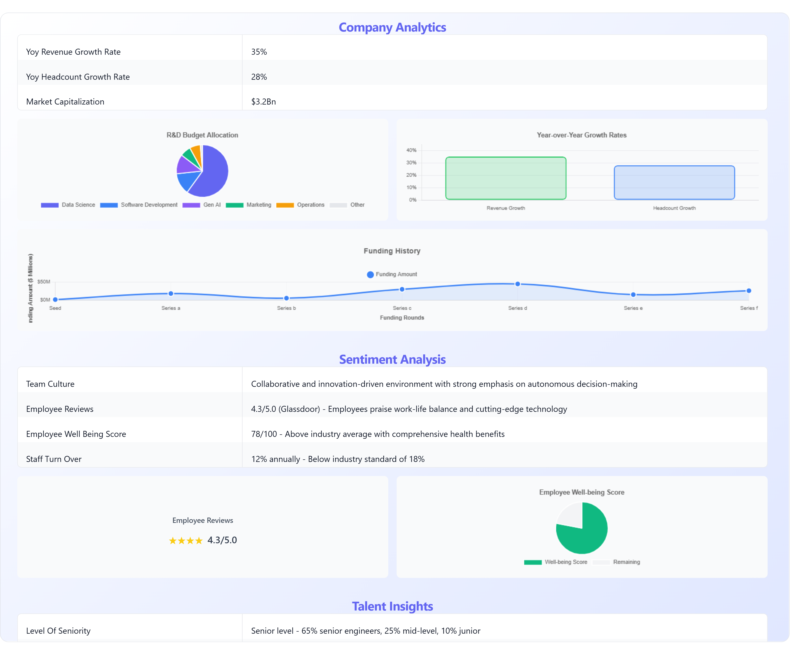

AI Talent Intelligence
The Talent you need isn't applying for jobs.
Get Executive Search-grade quality for every hire — even at Graduate level.
No job ads. No post & pray. A longlist built from the 80% that never applies.

VISIBLE
20% applying
HIDDEN
80% Likened finds
1
Unlock The Hidden Candidate Market
-
1. Show the model what good looks like
-
2. Learn about your target as you train the model
-
3. Visualize social networks in 3D
Visualize Social Networks in 3D

AI-driven Market Intelligence
- Skillset Mapping
- How rare is a skillset? How achievable is our list of requirements vs time-to-delivery?
- Talent Saturation
- How large is the global talent pool? Is there a skill gap between talent pools in different locations? Where to open our next office?
- Competitor Landscape
- How to budget for a role? Who are we competing with for this Talent? What's the competition's source of hire / attrition flow?
- Skill Gap Analysis
- What's the level of proficiency of their Engineers? How modern is their tech stack?
- Referral Mapping
- Who in your organisation's network is already connected to your target talent pools?
Frequently asked questions
What is Talent Mapping and how is it different from Talent Sourcing?
Talent Mapping is the exploration and identification of talented professionals. Companies, employees are "scanned" ehaustively, leaving no stone unturned. Our AI Agent propagates into social networks like LinkedIn, GitHub, Facebook to identify the right people in the right companies, according to your target.
Unlike the traditional Boolean keyword search, our LLM-driven web crawler has access to the Dark Web of the Talent market. It surfaces hidden gems that may not appear in a traditional Boolean keyword search.
From there, Talent Sourcing is the ranking and prioritisation of that pool of candidates, into a "Longlist": our semantic search engine, coupled with our LLM-scoring, ranks the Top100 candidates suitable to your job requirements.
How does Likened ensure data privacy compliance?
Likened aggregates data from public sources and offers users to connect their own networks to the platform in secured private spaces. We specialise in Talent Mapping / Sourcing / Insight & Analytics and whilst we offer basic CRM functionality, we leave it to more established platforms. Your sensitive recruitment data — interview notes, rejection reasons, assessments, contact details or personal communications — are bound to your account only.
How long does it take to receive a longlist?
Standard delivery is 2 business days from receipt of a completed role brief. In comparison, the industry average for a retained Executive Search firm to produce a comparable longlist is 6 weeks.
How good is the search quality? How does it compare to LinkedIn, Juicebox, Gem or others?
Likened has the one of the most accurate candidate search engine on the market. Its proprietary search technology outperforms traditional tools like LinkedIn Recruiter, Juicebox (PeopleGPT) and Gem in blind tests. Whereas keyword searches on LinkedIn and generative searches on Juicebox scored low on relevance, Likened's semantic search yields much higher match rates.
How current is the data provided by Likened?
likened has a unique capacity of providing realtime candidate data to ensure the latest job changes and skills are reflected.
Does Likened provide contact information for candidates?
Not yet. It's on our roadmap to connect to the APIs of professional contact information providers, such as SwordFish, Lusha.
How do you handle data privacy and compliance (e.g., GDPR/CCPA)?
We only work with publicly available data and offer members to connect their own connection networks. We are also finalizing our full compliance with both GDPR and CCPA to give our customers confidence that our candidate sourcing API meets international data privacy standards.
Does Likened replace our existing TA team or ATS?
No. Likened augments your TA team's Talent Mapping / Sourcing / Insights capability — it does not compete with your TAPs. Your team retains full ownership of the recruitment process: shortlisting, interviews, assessments, and offer management. Likened handles only the intelligence layer: who exists, where they are, and what the market looks like.
Augment your Talent Acquisition function with AI
You're looking at scaling Talent Mapping / Sourcing / Insights / Intelligence for your whole team?
Likened can help you achieve your Talent Acquisition goals.